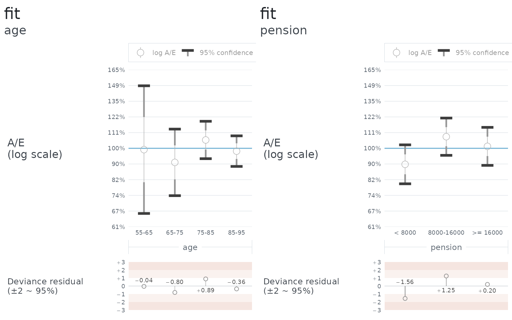

A mortality model in logmu is a reference mortality with a proportional adjustment on top:
\log\mu = \log\mu^\text{ref} + \sum_j \beta_j X_j
where the X_j are covariates you
write as functions of the individual and of time, and the \beta_j are what fit()
estimates, by maximum weighted log-likelihood. The reasoning is in Proportional hazards; this
article is about running it.
A portfolio whose truth is known
The trouble with real data is that you never learn whether the fit
was right. So this walkthrough uses data drawn from a mortality that is
written down first, by simulate(), and every result below
can be checked against it.
The population is a data frame with a birth column and
whatever else the model will read. Here that is sex and a pension, plus
a start date for those who retire during the period.
set.seed(2025)
lives <- 4000
population <- data.frame(
birth = datey::datey(2015 - sample(55:89, lives, replace = TRUE)),
sex = sample(c("male", "female"), lives, replace = TRUE, prob = c(0.6, 0.4)),
pension = round(exp(rnorm(lives, log(12000), 0.7))),
E2R_start = datey::datey(2015 + ifelse(runif(lives) < 0.25, runif(lives, 0, 3), 0))
)The truth is a Gompertz curve, steeper in age than the standard one, with men 40% heavier than women:
truth <- mortality(
if (.i$sex == "male") {
gompertz_mortality(log_mu_0 = -3.4, slope_x = 0.12, slope_t = 0)
} else {
gompertz_mortality(log_mu_0 = -3.8, slope_x = 0.12, slope_t = 0)
}
)
portfolio <- simulate(truth, lives = population,
exp_start = datey::datey(2015), exp_end = datey::datey(2020))
portfolio
#> # Exp data: 4,000 × 6 (5 yr)
#> # Start: 2015-01-01.0
#> # End: 2020-01-01.0
#> birth sex pension E2R_start E2R_end E2R_died
#> <datey> <chr> <dbl> <datey> <datey> <lgl>
#> 1 1948-01-01.0 female 31063 2015-01-01.0 2020-01-01.0 FALSE
#> 2 1949-01-01.0 male 18096 2017-05-07.5731 2018-05-11.5 TRUE
#> 3 1935-01-01.0 male 16960 2015-01-01.0 2020-01-01.0 FALSE
#> 4 1960-01-01.0 male 13400 2015-01-01.0 2020-01-01.0 FALSE
#> 5 1938-01-01.0 female 40107 2015-01-01.0 2020-01-01.0 FALSE
#> 6 1951-01-01.0 male 1867 2015-01-01.0 2020-01-01.0 FALSE
#> 7 1948-01-01.0 female 3169 2015-01-01.0 2020-01-01.0 FALSE
#> 8 1949-01-01.0 male 6836 2015-01-01.0 2020-01-01.0 FALSE
#> 9 1957-01-01.0 male 11170 2015-01-01.0 2020-01-01.0 FALSE
#> 10 1934-01-01.0 male 24224 2015-08-25.7937 2020-01-01.0 FALSE
#> # ℹ 3,990 more rowsEach life is followed from its start until it dies, or until the
period ends, and a death is recorded to the day. What comes back is an
exp_data shaped exactly like data you would load
yourself.
The model
A model is a reference mortality and a set of
covariates, and nothing else. The reference here is the standard
Gompertz curve with its time trend switched off, which is deliberately
not the truth: the level, the sex difference and the age slope are all
left for the fit to find.
reference <- gompertz_mortality(slope_t = 0)
sex_age <- model(reference, covariates(
male = .i$sex == "male",
female = .i$sex == "female",
age = .x - 75
))Each covariate is a pronoun expression: .i$sex reads a
column, .x is age, .t would be calendar time.
A comparison gives an indicator, 1 or 0, so male and
female are two levels rather than one level plus a
difference, and age is centred so that its coefficient is a
slope and the levels are read at 75.
Writing the two sex indicators as disjoint() instead of
covariates() tells the engine that no individual can be in
both, which lets it leave their cross-terms out of the information
matrix. It makes no difference to the answer and a large difference to
the cost once there are many groups.
Fitting it
overdispersion has no default, because mortality data is
always overdispersed and by an amount the analyst has to own. Simulated
data is the one case where 1 is the truth.
f <- fit(portfolio, sex_age, overdispersion = 1)
f
#> <fit: 3 terms, 5 iterations, 5 walks of the data>
#> include all records
#> weight lives
#> data 783 deaths, 16709 years of exposure
#> test mortality logmu default
#> Aw 783 Ew 515.53 Ew^2 515.53 Z 1
#> log A/E 0.41794 ± 0.044043 (1 sd) or ± 0.086322 (95%), at overdispersion 1
#> overdispersion 1
#>
#> estimate std_error conf_95pc
#> male 0.433759 0.059011 0.115659
#> female 0.001018 0.074462 0.145944
#> age 0.022448 0.004797 0.009402
#>
#> correlation
#> male female
#> female 0.37
#> age -0.67 -0.56
#>
#> L -2728.393 p 3 L_P -2731.393 k 3Reading downwards: the header says what the fit was run over and what
it saw – deaths, exposure, and the crude A/E on
test_mortality, which is the yardstick the Z scale is measured on. With no weight, w^2 = w and Z is exactly 1.
The coefficient table gives each estimate with two widths, and both
are named: std_error is one standard deviation, and
conf_95pc is the 95% half-width that the A/E charts draw,
1.96 times the first. Against the
truth: male should be -3.4 -
(-3.8 + 0) = 0.4 at age 75 and female should be 0,
and age should be 0.12 - 0.10 =
0.02. Every one of them is inside its conf_95pc.
The correlation matrix underneath is the covariance of the estimates with the units taken out. The negative correlation between the levels and the slope is the usual one: a higher level and a steeper slope explain the same deaths, and the data cannot quite separate them. It is why the coefficients should be read together and not one at a time.
The last line is the log-likelihood L, the penalty p and the penalised log-likelihood L_\text{P} = L - p that models are compared
on. With no weight p is exactly the
number of terms, k. The reasoning for that is in Suddenly AIC, and the comparison
itself is the next
article.
summary() returns all of this as an object, so
summary(f)$coefficients and
summary(f)$correlation can be programmed against;
coef() and vcov() give the estimates and their
covariance.
Where the iteration starts, and why it rarely matters
Every fit starts at \beta = 0, which is the reference mortality itself. The header’s “5 iterations, 5 walks of the data” is what that costs: Newton-Raphson on a log-likelihood this well behaved converges in a handful of steps. A step that would overshoot is halved until it does not, and each halving is another walk of the data, so the two counts differ when that has happened. Here it has not.
So the starting point tends not to matter, and
compare_models() has no argument for it at all. When it
does matter – a reference so far from the data that the first steps are
wasted, or a model on the edge of what the data supports – the right
move is not to hunt for a better \beta
but to move the reference: translate \log\mu^\text{ref} by a weighted sum of the
covariates so that \beta = 0 is where
the data already is. fit() keeps a start
argument as an escape hatch for the rare case where that is not
enough.
The fitted model is a mortality
f$mortality is a mortality like any other,
with the coefficients folded in. It can go straight back into
aev(), or be used as the reference of a further model,
which is how fitting is layered.
Against the data it was fitted to, an A/E on it comes out at 100% by
construction – the score equations are zero at the maximum – so the
useful question is how it does on subsets the fit did not see as such.
diagnose() asks that for whatever breakdowns you name,
reusing the fit’s own include, weight and overdispersion, and crossing
the data once for all of them:
d <- diagnose(portfolio, f,
breakdown = list(age = ages(55, 95, by = 10),
pension = bands(.i$pension, thresholds = c(8000, 16000))))
d
#> <diagnosis: 1 candidate, 2 breakdowns>
#> include all records
#> weight lives
#> overdispersion 1
#>
#> ---- fit
#>
#> estimate std_error conf_95pc
#> male 0.433759 0.059011 0.115659
#> female 0.001018 0.074462 0.145944
#> age 0.022448 0.004797 0.009402
#>
#> correlation
#> male female
#> female 0.37
#> age -0.67 -0.56
#>
#> A/E by age
#> <aev[4]>
#> group name A E V A/E 95% conf dev resid
#> 1 age 55-65 23 23.19364 23.19364 0.9916510 0.40697113 -0.04026476
#> 2 age 65-75 78 85.32419 85.32419 0.9141604 0.21218369 -0.80467973
#> 3 age 75-85 285 270.26062 270.26062 1.0545377 0.11922208 0.88860804
#> 4 age 85-95 397 404.22164 404.22164 0.9821345 0.09748512 -0.36026899
#>
#> A/E by pension
#> <aev[3]>
#> group name A E V A/E 95% conf dev resid
#> 1 pension < 8000 225 249.1816 249.1816 0.9029558 0.1241624 -1.5577255
#> 2 pension 8000-16000 293 272.0849 272.0849 1.0768699 0.1188217 1.2522234
#> 3 pension >= 16000 265 261.7336 261.7336 1.0124798 0.1211486 0.2014829
plot(d)
The age bands sit on 100% within their intervals, which is what a correct age slope looks like. The pension bands do too, and should: the truth has no pension effect, so a model without one is right not to find it. A fit to real data would be judged the same way, on the breakdowns that matter to the liabilities.
Weighting by amounts
Weight the log-likelihood by pension and the fit follows the money:
fit(portfolio, sex_age, weight = .i$pension, overdispersion = 1)
#> <fit: 3 terms, 5 iterations, 5 walks of the data>
#> include all records
#> weight .i$pension
#> data 783 deaths, 16709 years of exposure
#> test mortality logmu default
#> Aw 12120164 Ew 7866351 Ew^2 2.0255e+11 Z 25748
#> log A/E 0.43228 ± 0.057212 (1 sd) or ± 0.11213 (95%), at overdispersion 1
#> overdispersion 1
#>
#> estimate std_error conf_95pc
#> male 0.42478 0.076321 0.14959
#> female 0.05936 0.093927 0.18409
#> age 0.02294 0.006162 0.01208
#>
#> correlation
#> male female
#> female 0.37
#> age -0.67 -0.55
#>
#> L -1639.101 p 2.995653 L_P -1642.097 k 3Two things change. The header now measures Z = \mathrm{E}w^2/\mathrm{E}w on
test_mortality, because it is no longer 1, and the penalty
is no longer a count. The estimates are close to the unweighted ones
here because the truth has no pension effect; on a real portfolio where
mortality varies with amount, the two fits would differ, and the
weighted one is the one the liabilities care about.
What to do with several candidate models is the next article.